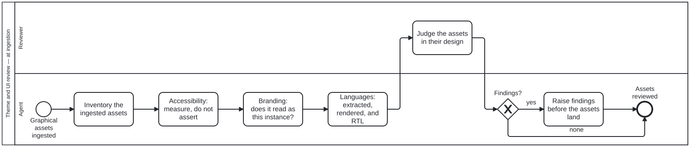

Generated from
cat-harness/processes/ui/theme-ui-review.bpmnbygen-processes-viz.ts— do not edit here. All processes
Process_ThemeUIReview · advisory · 6 step(s)
Reviewing GRAPHICAL ASSETS AS THEY ARE INGESTED — accessibility, branding, languages — in the context of the website or app design they are for, to determine what the graphical assets and the UI are going to be.
AT INGESTION ONLY, by the owner’s ruling (bean 9fdi). 2026-09-23: “theme review to ingestion of graphical assets in context of website or app design and determining graphical assets/UI”. 2026-09-24, asked directly whether that meant ONLY at ingestion: “Yes only at ingestion”.
This process was post-MVP until then — started by “MVP accepted” and called from crdm-deliver.bpmn on the edge out of stakeholder acceptance, reviewing what had already shipped. That call is gone. It is now called from ingest-theme.bpmn.
WHY THE MOMENT MATTERS. Reviewed after a build, a finding is a defect in something shipped. Reviewed at ingestion, the same finding is a decision about what the assets WILL be, taken while it is still cheap. The question the review asks is unchanged; the object it asks it of moved upstream, and so did the cost of the answer.
WHAT DID NOT MOVE. There is still no role-to-theme mapping — theme choice remains an authoring judgement, per note — so nothing here checks a binding. What gets reviewed is the ingested art in its design context.

| lane | role | what it does here |
|---|---|---|
| Reviewer | reviewer |
The single point in this process where a person looks rather than a tool measures, reached only after all four agent passes are done — so what this lane judges is the ingested assets as a whole, in the design they are for — not any one axis in isolation. Its finding is the only thing that can send the process to A_RaiseFindings; a clean ingest, a passing accessibility check and a correct branding pass can each be true and still miss what only laying the assets out and looking catches. |
| Agent | ingestion-agent |
Four measured passes into R_Judge — inventory, accessibility, branding, locales — each one required to MEASURE rather than assert, because an automated pass alone missed three defects a rendered look caught outright. If GW_Findings comes back yes, this lane still does not fix anything: A_RaiseFindings sends the finding back to whoever authored the theme choice, since picking it was a judgement call this lane does not get to override. |
Every one of the 6 step(s) is documented.
| step | lane | skill / sub-process | what it does |
|---|---|---|---|
Inventory the ingested assetsA_Inventory |
Agent | theme-ui-review |
Which graphical assets arrived, for which surfaces of the website or app design, in which locales, and at which VIEWPORTS: every surface at a web width and at a mobile width (owner, 2026-09-23, issue #1023). Read off the ingested artefacts rather than off the intent — a layout the source declares but does not supply is not in the inventory, and a surface the design needs but no asset covers is the one that would ship wrong. |
Accessibility: measure, do not assertA_Accessibility |
Agent | theme-ui-review |
Contrast COMPUTED against the real ground, including the worst case a backdrop can present; a non-colour channel wherever colour carries meaning (SC 1.4.1); an accessible name on every region; keyboard and focus order. An automated pass is necessary and not sufficient — axe accepts a non-empty placeholder as an accessible name, and a CSS selector that matches nothing raises no error at all. |
Branding: does it read as this instance?A_Branding |
Agent | theme-ui-review |
Marks, palettes and art against the instance’s own declaration rather than a remembered style. The question a downstream folio makes sharp: would this instance inherit something it did not choose? |
Languages: extracted, rendered, and RTLA_Locales |
Agent | theme-ui-review |
Every user-facing string reaches the .pot; every declared locale renders without clipping or overflow; right-to-left is laid out rather than mirrored by accident. New UI is where untranslated strings enter, because nothing was stale — there was nothing there before. |
Judge the assets in their designR_Judge |
Reviewer | — | A person looks at the ingested assets laid out in the design they are for, at BOTH a web and a mobile width. THIS IS A HUMAN STEP INSIDE INGESTION, and that is stated rather than hidden: ingest-theme.bpmn used to refuse to call this process for exactly that reason. The owner’s ruling puts theme review at ingestion only, and a ruling that moves a review does not remove the person who performs it — so ingestion of a THEME SOURCE is attended at this step, while ingestion of everything else stays unattended because Gateway_ThemeSource routes it past. A judgement made at one viewport is incomplete, not passed, and the wireframe of the surface (wireframe-design-review) says what each layout was meant to be. Three defects in the landing board — a selector matching nothing, a crop cutting the subject, a fade wrong in both directions — were invisible to a clean build, a passing suite and every gate, and were found only by rendering the page and looking. |
Raise findings before the assets landA_RaiseFindings |
Agent | theme-ui-review |
Findings go back to whoever authored the choice, because the choice was theirs: a theme is picked per note by a human or an agent, and there is no mapping to correct instead. Raised, never silently fixed — a reviewer who re-themes a note has substituted their judgement for the author’s without saying so. |
Every one of the 1 decision(s) is documented.
| decision | what decides it | branches |
|---|---|---|
Findings?GW_Findings |
The reviewer’s judgement of the ingested assets in their design. yes raises findings before the assets land; none ends reviewed and the Theme node proceeds. |
yes → Raise findings before the assets land none → Assets reviewed |